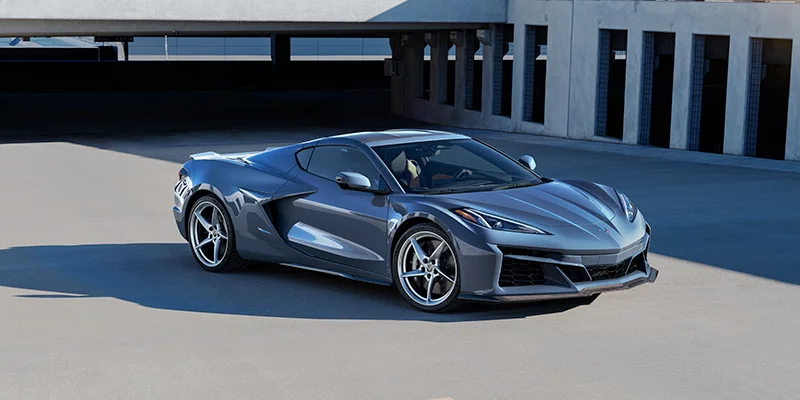
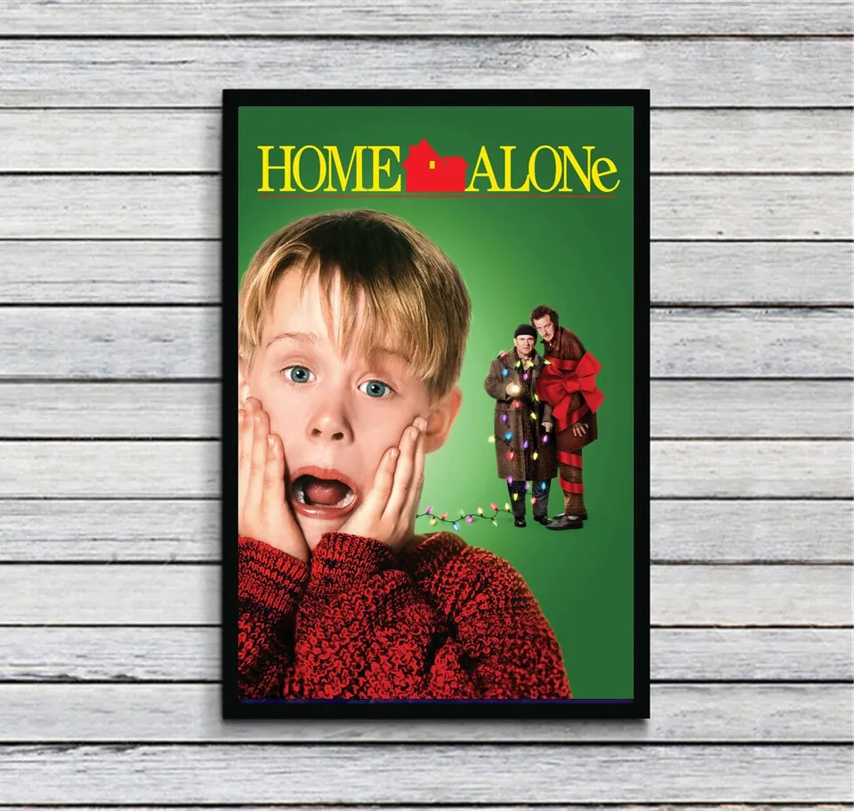

I will be ranking the anime, movies, TV shows, and dream cars, personal review.
| Rank | Anime | Movies | TV Shows | Cartoons | Dream Cars |
|---|---|---|---|---|---|
| S | Attack On Titan | Baywatch 2 | Lucifer | Shrek 2 |  |
| A | Baki | Fury | Shameless | Finding Nemo | Toyota Supra |
| B | Demon Slayer | La La Land | The Walking Dead | Cars | Jaguar F-Type |
| C | Black Clover |  | The 100 | Ratatouille | Toyota GR86 |
| D | Seven Deadly Sins | Fast and Furious 9 | Black Sails | Home | Honda Civic |
Reflection
This tierlist as a mentioned above was from my own personal experience. During the making of this website I learned how to use table and how I can assign a class for it, so I can later style it in CSS and have more control over the table I have created. There were very few chalenges which thought me things like when to use "th" and "td", from my understanding "th" is used for the title if the table and "td" is used for the rest of the table. Overall I had fun doing this lab, and learned few new things.